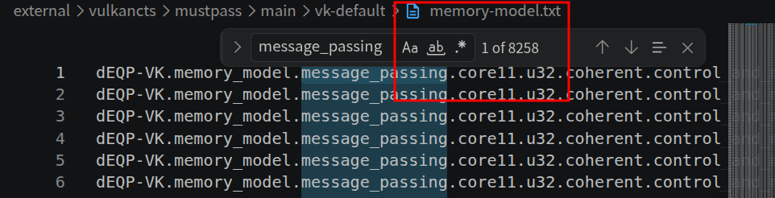

MessagePassing
Visibility Tests
Topic: how Vulkan CTS turns a classic GPU memory-model question into executable shader tests.
30-minute path
- Brief intro to Vulkan CTS and my wiki work.
- Walk through one representative
message_passingcase. - Generalize carefully to nearby families and categories.
Vulkan CTS:
What and Why
What it is
- Conformance: this product follows official Vulkan rules
- Beyond “works”: guarantees compatibility
- Pass Vulkan CTS: chip + driver + compiler + runtime + platform
Why it matters for us
- DX11 / DX12 and Vulkan: both need conformance
- Today: primary push on DX + HLK
- Later: Vulkan CTS as an open-source window into conformance
Why this talk
memory_model: critical and difficult- Audience already cares about it
- New lens: conformance test as final observable goal
My Wiki Work (ongoing):
Executable Spec → Readable Knowledge
Raw CTS is hard to read
- Registration tree
- Mustpass lists
- Parameter matrices
- Shader generation + host verification
Wiki explains it in place
- Test intent and failure meaning
- Parameters and generated variants
- Runtime validation flow
Shader Analysis: representative walkthrough
How it helps after completion
- Failure triage: locate likely root causes faster
- Group-level diagnosis: connect related failing cases
- Test-driven implementation: know required behavior before coding
Focus for This Talk:
message_passing
A family, not one case
message_passingexpands into many registered CTS cases- Each line is one concrete parameterized test case

Where it sits in CTS
This path names a hierarchy, not a single hand-written shader.
- Part B decodes one representative case from this family
- The claim comes later, after the vocabulary is clear
Backgrounds:
Before the Walkthrough
Concrete problem: mirror a 4×8 work tile
Think of one warp-like subgroup with 32 shader invocations. Each invocation owns one matrix slot, initialized to its thread ID. The toy goal is to mirror left and right endpoints.
payload and guard
Payload and guard are separate per-invocation slots. For T1/T6, T1 writes payload[1] = 1, then signals guard[1]; T6 checks that slot after observing guard[1].
payload[6] = 6
guard[6] = ready
release and acquire
Pick T1 as writer and T6 as reader. No extra swap temporary is required; the connection is made through payload[1] and guard[1].
The Path We Will
Walk Through
The registered path
Decoding the path
- message_passingpayload-before-guard visibility rule (not
write_after_read, nottransitive) - ext · noncoherentVulkan memory model + explicit MakeAvailable / MakeVisible
- u32
uintpayload & guard — no 64-bit / float atomic noise - atomic_atomic · atomicwriterelease on guard store, acquire on guard load (no RMW)
- subgroupsmallest scope — lanes paired by XOR with
gl_SubgroupSize - 1size = subgroup cardinality, e.g. 32 - payload_nonlocal.bufferSSBO binding 0, one slot per invocation
- guard_nonlocal.bufferSSBO binding 1, one atomic slot per invocation
- compcompute, specialization-controlled dispatch dimensionsDIM = 31, NUM_WORKGROUP_EACH_DIM = 8
Pairing Lanes,
Locating Data
Active subgroup lanes, paired by XOR
With subgroup size = 32, every lane i is paired with lane 31 - i by XOR with 31.
i = 0 = 0b000000↔31 - 0 = 31 = 0b011111i = 8 = 0b001000↔31 - 8 = 23 = 0b010111i = 16 = 0b010000↔31 - 16 = 15 = 0b001111i = 24 = 0b011000↔31 - 24 = 7 = 0b000111
i], then signal guard[i]
consume: observe guard[i ^ 31], then read payload[i ^ 31]
every lane runs both roles on its own pair
SSBO, one uint slot per invocation. Writer stores bufferCoord; partner loads partnerBufferCoord.
SSBO, one atomic uint slot per invocation. Release-store signals guard[i]; acquire-load observes guard[partner].
SSBO, host-cleared. Each invocation writes 1 here iff it observed the guard but found a stale payload. Host scans every slot.
Payload Before Guard,
Check After Guard
If lane i observes partner guard i ^ 31, then partner payload i ^ 31 must already equal partnerBufferCoord.
In this case bufferCoord = i and partnerBufferCoord = 31 - i — each lane's slot is its own ID, and the partner's slot is the mirrored ID.
payload[bufferCoord] = bufferCoord;
atomicStore(guard[bufferCoord], 1, …release…);
skip = atomicLoad(guard[partnerBufferCoord], …acquire…) == 0;
r = payload[partnerBufferCoord]; if (!skip && r != partnerBufferCoord) fail[bufferCoord] = 1;
if !skip observed
Guard was signaled. Acquire must have made the partner payload write visible. The check fires; payload matches expected value, no fail written.
if skip not observed
Partner guard was still 0. This race instance is not judged; no fail written regardless of payload value.
The four steps, in shader order
// Step 1 payload.x[bufferCoord] = bufferCoord; // Step 2 atomicStore(guard.x[bufferCoord], 1u, …release+makeAvailable…); // Step 3 skip = atomicLoad(guard.x[partnerBufferCoord], …acquire+makeVisible…) == 0u; // Step 4 r = payload.x[partnerBufferCoord]; if (!skip && r != uint(partnerBufferCoord)) fail.x[bufferCoord] = 1u;
Why the Guard
Carries the Payload
make payload available before the guard
atomicStore(guard.x[bufferCoord], 1u, gl_ScopeSubgroup, gl_StorageSemanticsBuffer, gl_SemanticsRelease | gl_SemanticsMakeAvailable);
gl_ScopeSubgroupwho can synchronizegl_StorageSemanticsBufferwhich storage classgl_SemanticsReleasepublish prior writesgl_SemanticsMakeAvailablepush them toward the scope
Effect: the prior payload write at bufferCoord becomes available across the subgroup, anchored at the guard signal.
make partner payload visible after the guard
skip = atomicLoad(guard.x[partnerBufferCoord], gl_ScopeSubgroup, gl_StorageSemanticsBuffer, gl_SemanticsAcquire | gl_SemanticsMakeVisible) == 0u;
gl_ScopeSubgroupwho can synchronizegl_StorageSemanticsBufferwhich storage classgl_SemanticsAcquireblock on prior signalgl_SemanticsMakeVisiblepull writes into local view
Effect: the partner payload write at partnerBufferCoord becomes visible to the reader after the guard is observed.
Synchronization reach — only the 32 lanes of this subgroup can pair here. device, queuefamily, workgroup are other choices; the protocol changes meaning with each.
Storage class under synchronization — the SSBO at binding 0/1. The guarantee only carries payload writes that live in buffer storage, not image / workgroup / physbuffer.
The ordering guarantee applies only across this exact combination — the payload edge does not cross scope boundaries or jump between storage classes.
The visibility edge, end to end
ii]i]i ^ 31i]i]From Shader Observation
to Host Verdict
if (skip) { /* no fail written */ }
Partner guard was not observed
The reader saw guard[partner] still equal to 0. This race instance is not judged. The shader writes nothing to the fail buffer; this invocation contributes no information about memory-model correctness.
Outcome: no fail entry. The case can still pass on this iteration.
if (!skip && r != partnerBufferCoord) { fail[bufferCoord] = 1; }
Guard was observed, payload was wrong
The reader saw guard[partner] non-zero (acquire fired) but the partner payload read returned a stale or incorrect value. The guard promised visibility, but the visibility did not actually carry the payload through.
Outcome: fail entry = 1 at this invocation's slot.
Host-side loop: from fail-buffer entries to a case verdict
memset(fail, 0, …);
clearBuffer(payload); clearBuffer(guard);
vkCmdDispatch(cmd, …);
vkCmdCopyBuffer(… fail …);
any nonzero → case fails
What a failure usually means
- Release/acquire propagation broken — the guard signal was issued but the prior payload write did not reach the partner.
- Scope mishandling — synchronization reached the wrong set of invocations (e.g. workgroup scope where subgroup was needed, or vice versa).
- MakeAvailable / MakeVisible dropped — noncoherent extension-mode cases rely on these bits; a lowered shader that omits them fails this exact path.
- Storage-class lowering — buffer / image / workgroup / physbuffer handled differently in the back-end; this case is buffer-only and exposes that specific lowering.
- Shader-compiler issue — barrier or atomic lowering removed the required ordering; vendor compilers must preserve release/acquire across the optimization pipeline.
No tolerance, no partial success: one nonzero entry makes the case fail. Up to 256 failing invocation indices are logged.
storage-class lowering — the compiler rewriting a high-level GLSL storage class (workgroup, image, …) into the actual backend storage (LDS, texture unit, …).
barrier / atomic lowering — the compiler translating atomicStore, memoryBarrier, controlBarrier into the actual hardware instruction sequence; release/acquire bits must survive this translation.
Same message_passing Family,
Many Dimensions
If partner guard is observed, partner payload must be visible with the expected value.
write payload → release-store guard → acquire-load partner guard → check partner payload, or skip
varying dimensions
- memory-model modecore11 / extrules + extensions
- data typeu32 / u64 / f32 / f64atomic feature pressure
- sync formfence_fence / fence_atomic / atomic_fence / atomic_atomic / control_barrier / control_and_memory_barrierwhere the release/acquire lives
- atomic opatomicwrite / atomicrmwstore vs exchange
- scopedevice / queuefamily / workgroup / subgroupwho can pair
- payload storagebuffer / image / workgroup / physbufferwhere the protected data lives
- guard storagebuffer / image / workgroup / physbufferwhere the signal lives
- shader stagecomp / vert / fragpipeline around the protocol
The 4-step claim from page 08 is the fixed center. Every row in the mustpass file just picks a different value along one or more of these axes. The protocol structure does not change — only the resources, the operations, and the synchronization domain do.
How write_after_read
and transitive Differ
Same concepts — payload, guard, skip, fail — but three different ordering questions.
message_passing
Expected: after the guard is observed, the protected payload is visible.
Fail when: guard observed, but partner payload is stale or wrong.
write_after_read
Expected: the early payload read stays zero; it must not see the later write.
Fail when: the early read sees a nonzero value that should not have been visible yet.
transitive
Expected: if the chain is observed, visibility reaches the final payload read through the relay.
Fail when: the chain was observed, but the final payload read is stale or wrong.
Part B taught the direct protocol. These nearby families mutate the timing or add a relay, but keep the same CTS pattern: shader detects bad visibility, writes the fail buffer, and the host scans it.
Other Test Families
in memory_model
The category has 5 registered families
memory_modelmessage_passingvisibilitywrite_after_readearly readtransitivevisibility chainpaddingstd140 bytessharedworkgroup layoutSynchronization / visibility
message_passing, write_after_read, and transitive all ask timing questions around payload, guard, scope, and visibility.
padding
Copies declared std140 structure members, then checks that destination padding bytes keep their host-initialized sentinel values.
shared
Generates GLSL shared objects, writes nested fields, synchronizes within the workgroup, reads them back, and compares values.
Same category, different memory-correctness angles: visibility timing, layout-preserving writes, and workgroup shared-memory value preservation.